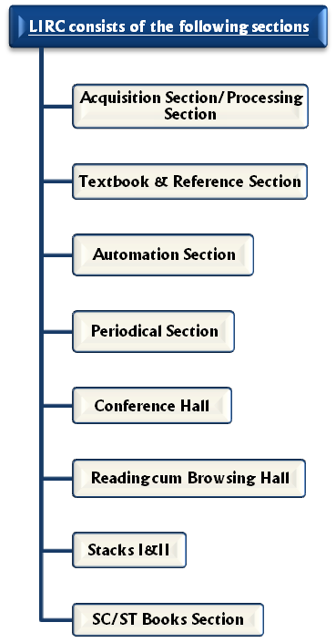

The history of LIRC dates back to 1960 with the inception of National Institute of Technology. NIT Srinagar Library supports Teaching, Research & and other related programmes of the Institute. The Library has a good collection of a 74769 documents that comprises of Books, Journals, Thesis, Video cassettes, Learning Resources (LRs) & Compact discs in the field of Engineering, Science, Management, Literature & Humanities.

LIRC tries its best to cope up with the demands of the patrons by adapting to new technologies in field of library and information management. The Library has computerized data of its book collection and of the patrons that avail services of LIRC. Koha, open-source software is deployed on the Libraries Intra-Net. The book collection and patron data is available on Koha. The RFID technology is also implemented in the Library. Automated Book Check-in/Check-out Kiosk's are placed throughout the library along with OPAC Kiosk's. Koha and RFID framework are supported by Linux, Apache, Maira-DB & Perl technologies. Linux and Windows servers are also used. LIRC also houses a browsing centre where patrons can browse online resources using LIRC's wired or Wireless (Wi-Fi) network. Microsoft’s Active Directory Services is an upcoming project for the patrons of LIRC. LIRC has extended the services beyond the physical walls of a building, by including material accessible by electronic means & by developing a modernized e-resource library with a variety of E-Journals and e-Databases. The Library distinguishes itself by providing Remote Access Facility (RAF) to all the subscribed electronic journals and journals accessible via e-Shodhsindhu consortium.
Anti Plagiarism Policy: LIRC has subscription to both Turnitin and Urkund, web-based similarity detection services to help the researchers in making high quality plagiarism free research contents.